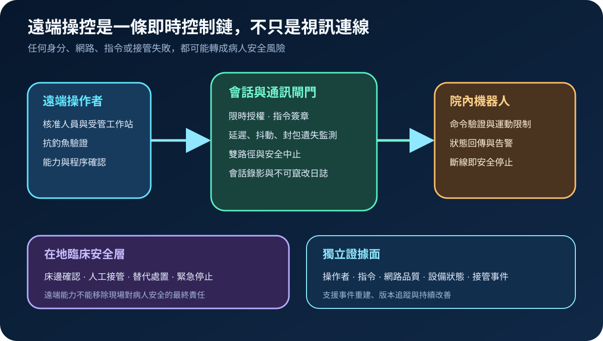
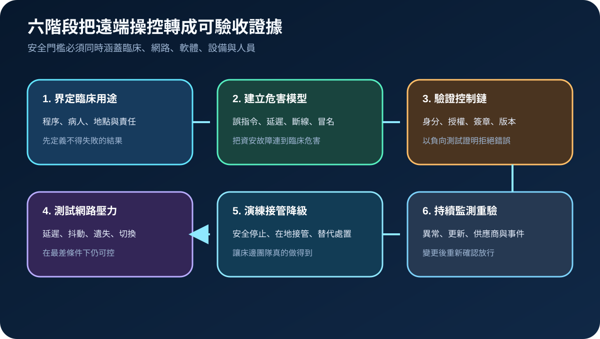
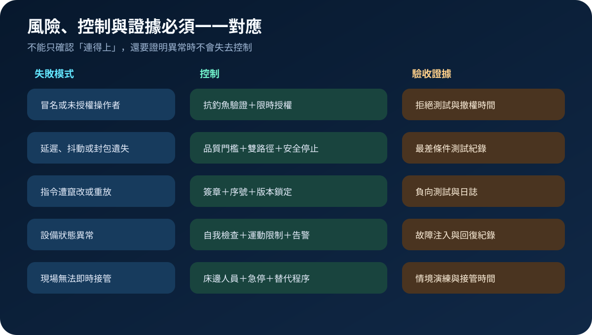

醫療資安國際觀察 · 2026-11-11
醫療機器人遠端操控如何避免失控：從延遲、指令完整性到安全降級
作者：Dr. William｜醫療資訊與資安治理實務工作者
遠端操控醫療機器人把臨床操作延伸到院外，但也把操作者身分、即時網路、控制指令、設備狀態與床邊接管串成單一安全鏈；驗收不能停在「連得上」，而要證明異常時可安全停止並由現場接手。
名詞解釋：遠端操控、自主能力與安全降級
遠端操控是操作者在異地即時控制設備；自主能力則由設備依預先定義條件執行部分任務。安全降級不是單純斷線，而是在延遲、資料失真、設備告警或身分異常時，依風險進入限速、暫停、安全位置、在地接管或替代處置。
國際現況與適用邊界
FDA 於 2026 年 11 月 6 日發布自主或遠端操控機器人醫療設備討論文件，範圍涵蓋診斷、治療、復健、手術與非手術用途，並討論術語、效益風險與緩解方法；該文件明確說明僅供討論，不是草案或最終指引，也不代表監管要求。NIST 於 2026 年 4 月更新 IoT 產品製造商基礎資安活動，強調把產品、配套元件、支援能力與生命週期一起治理。CISA 的控制系統遠端存取實務則強調跨域責任、分層防禦、網路分段、集中日誌與持續監測。這些資料屬美國產品討論、一般 IoT 基線與控制系統實務，不是台灣醫院的法定義務。
台灣適用原則：可把國際方法轉成院內採購、網路設計、臨床放行、維運契約與演練條件；實際使用仍須依台灣醫療器材、醫療業務、個資、資安、醫療品質及院內臨床治理程序確認。
規劃：先定義不得失敗的臨床結果
治理範圍應列明設備用途、病人族群、操作者地點、院內床邊角色、網路提供者、設備與軟體版本、指令權限、可接受延遲、斷線行為及替代程序。驗收指標可包含身分驗證覆蓋率、未授權指令拒絕率、延遲與抖動門檻、封包遺失下的安全停止時間、雙路徑切換時間、在地接管時間、日誌完整率及版本變更後重驗完成率。
實作：六階段形成可放行證據
- 界定用途：確認程序、地點、操作者、床邊人員與責任。
- 危害建模：把冒名、誤指令、延遲、斷線、資料失真與設備故障連到臨床後果。
- 控制鏈驗證：測試強驗證、限時授權、指令簽章、重放防護與版本鎖定。
- 網路壓力測試：注入延遲、抖動、遺失、路徑中斷與回復，確認門檻及切換。
- 接管演練：由床邊團隊實作暫停、急停、人工接管與替代處置。
- 持續監測：設備、軟體、網路、供應商或臨床用途變更時重新放行。

風險：把低延遲當成唯一安全條件
低延遲無法證明操作者可信、指令未被竄改、設備狀態正確或現場能接管。常見失敗還包括共用帳號、長效遠端權限、只測正常網路、日誌留在同一設備、床邊人員不熟悉急停，以及更新後未重新量測。控制重點是多層門檻、主機外證據、異常自動降級、可觀測的安全停止與定期情境演練。

可執行清單
- 是否為每位操作者配置獨立身分、受管工作站、抗釣魚驗證與限時權限？
- 是否定義延遲、抖動、封包遺失及狀態不同步的安全門檻？
- 控制指令是否具簽章、序號、重放防護與版本相容性檢查？
- 是否以最差網路條件測試雙路徑、暫停、安全位置與恢復？
- 床邊團隊是否能在明確時間內急停、接管並執行替代處置？
- 操作者、指令、網路品質、設備狀態與接管事件是否保存於獨立證據面？
來源
- FDA｜Evaluating Benefit-Risk in Robotic Medical Devices with Autonomous or Remote Teleoperation Capabilities（發布：2026-11-06；查閱：2026-11-11）
- NIST｜IR 8259 Rev. 1, Foundational Cybersecurity Activities for IoT Product Manufacturers（發布：2026-04-20；查閱：2026-11-11）
- CISA｜Configuring and Managing Remote Access for Industrial Control Systems（文件未標示發布日；查閱：2026-11-11）
內容說明
本文依健康台灣深耕計畫相關治理內容整理，並參考 FDA、NIST 與 CISA 官方資料，說明遠端醫療機器人的操控鏈、通訊品質、指令完整性、在地接管與持續重驗；不把美國討論文件或一般控制系統實務視為台灣醫療機構的法定義務，也不取代主管機關規範、醫療器材評估、臨床驗證、網路工程、契約審查或法律意見。